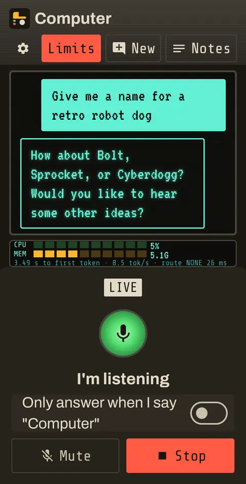
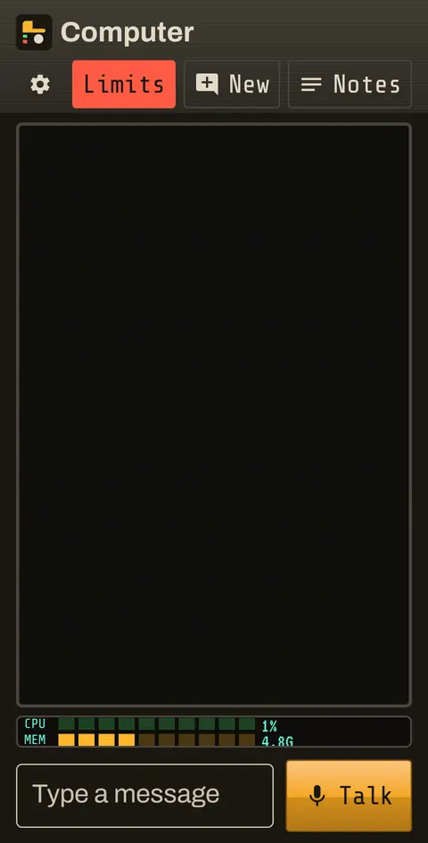
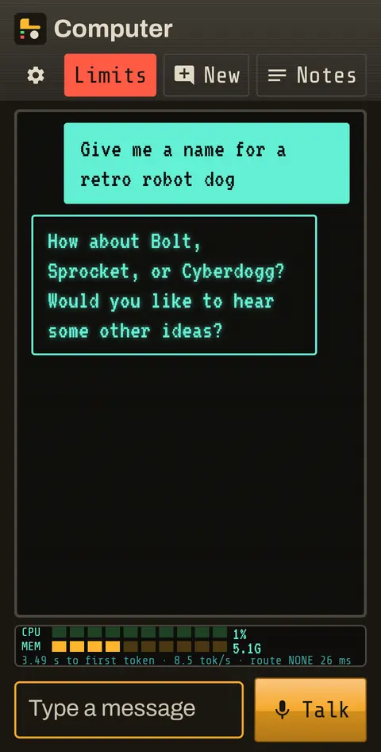
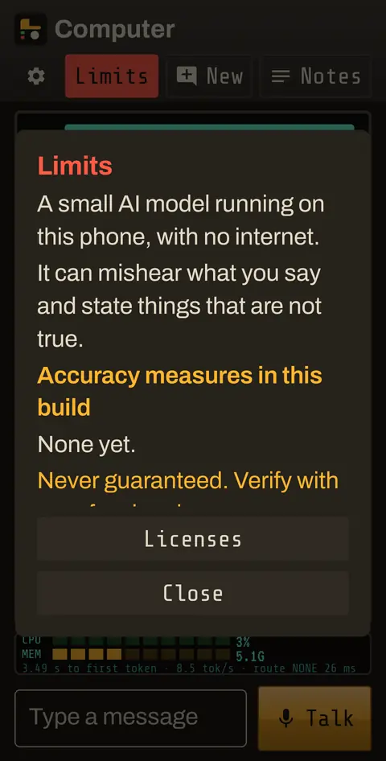

Open source voice assistant Android · iPhone · iPad MIT
Nothing leaves your phone.
Offwire is a hands-free voice assistant that runs Gemma 4 entirely on your phone. No account, no cloud. Turn on airplane mode and keep talking.
iPhone and iPad are fully supported and are coming to the App Store next.
- 0 serversSpeech, model and voice run on the device
- Hands-freeTalk to it and interrupt it, with nothing to tap
- 1 downloadThen it works with no signal

Screenshot from the app on a Pixel.
The real app.



Everything runs on the device.
Cloud assistants send what you say to a server to answer it. This one answers on the phone itself. Here is exactly what that means.
-
On device
Speech, model and voice stay local
Speech recognition, the language model and the spoken voice all run on the phone. There is no server on the other end.
-
Offline
One download, then airplane mode
The only network use is fetching the model once: the Gemma 4 E2B file, about 2.6 GB, from Hugging Face. After that it works with every radio off.
-
Anonymous
No account, no analytics
No sign-in, no account, no analytics. The app has nothing to identify you with and nowhere to report to.
-
Encrypted
Notes are encrypted at rest
Things you ask it to remember are saved only on the device. On Android they are encrypted with AES-256-GCM, using a Keystore key that cannot be exported. On iPhone and iPad they are protected by the device's file encryption.
Check it yourself
The code is open, so the promise is checkable. By project rule, a single class, NetworkClient, is the only code allowed to open a connection.
Every request it makes is written on the device to network-log.jsonl. Read the class, then read the log.
Six stages, one phone.
Your voice goes in at the microphone and a spoken answer comes out of the speaker. Every stage in between is a model running locally.
-
Input
Microphone
Listens hands-free. Nothing to tap while you drive or walk.
-
Voice activity
Silero VAD
Detects when you start and stop speaking.
ONNX Runtime -
Speech to text
Parakeet TDT 110M
NVIDIA's int8 model turns your speech into text.
sherpa-onnx -
Language model
Gemma 4 E2B
Writes the reply on the phone's GPU and streams it out token by token.
Google LiteRT-LM -
Text to speech
Your phone's voice
Speaks each clause as it arrives, using the voice built into your phone.
System voice -
Output
Speaker
The answer, out loud, without looking at the screen.
It talks while it thinks
Replies are spoken clause by clause as they stream, so you hear the start of an answer before the model has finished writing it.
Interrupt it mid-sentence
Start talking and it stops to listen. Barge-in works the way it does with a person.
Optional wake word
In wake word mode it listens for a wake phrase. Speech that isn't addressed to it is never sent to the model.
Built for drives and walks.
A voice-first assistant and brainstorming partner for the times your hands and eyes are busy. It is a small model: quick, private and sometimes wrong.
Good at
- Thinking out loudTalk through an idea on the road and have something push back.
- Remembering thingsAsk it to remember something and it saves a note on the device. It answers later questions from those notes.
- Working with no signalAnywhere the model is already on the phone, signal or not.
- Eyes-free useLarge print, strong contrast, follows your phone's font size, and usable without looking at the screen.
Honest limits
- It has no internetIt can't look anything up: no news, weather, scores or search.
- It can be wrongGemma 4 E2B is a small model. Check anything that matters.
- It isn't a coding toolIt is made for conversation, and it is the wrong tool for writing code.
- It has one tool
save_note. It saves notes and answers from them, and that is all it can act on.
A small router model reads each request first, so Gemma is handed the note tool only when you ask it to remember something.
PlannedAn on-device code sandbox: the model writes a little JavaScript and runs it offline in a hidden browser view, for exact math, quick stats and small data jobs like parsing or converting.
PlannedImage understanding: show it a photo, a screenshot or a document and ask about it by voice. Input only, no image generation.
Install it today.
- Android
- 12 or newer
- Storage
- About 3.6 GB free
- Memory
- A recent phone with 8 GB RAM or more is recommended
- Model
- Downloads once over Wi-Fi, about 2.6 GB
- iPhone and iPad
- Fully supported. Coming to the App Store next
Download the APKVersion 0.4.0, 365 MB, on GitHub Releases. Open it on your phone and allow the install.
$ git clone https://github.com/chrishonson/offwire
$ cd offwire
$ ./gradlew :app-classic:installDebugTo build it yourself, connect a phone with USB debugging on. The first launch downloads the model, then compiles it for the GPU once.
Read it, run it, improve it.
Offwire is a personal project released under the MIT license. Issues and pull requests are welcome. These are the places help counts most:
Device testing
Run it on a phone other than a Pixel 9 Pro and report what you measure.
Tool routing evals
Test cases that show when the model should call a tool and when it should just answer.
iPhone and iPad
The same app runs on iPhone and iPad and is on its way to the App Store. Build it from source and report what you find.
- Kotlin Multiplatform
- Compose Multiplatform
- Strict MVI
- LiteRT-LM
- sherpa-onnx
- ONNX Runtime